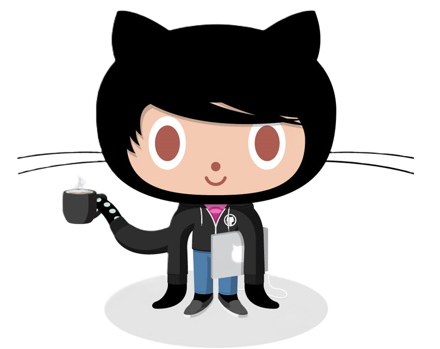

| Terms |
Definition |
repository |
A repository is the most basic element of GitHub. It's a place where you can store your code, your files, and each file's revision history. Repositories can have multiple collaborators and can be either public or private. |
| commit |
A commit records changes to one or more files in your branch. |
fork |
A new repository that shares code and visibility settings with the original "upstream" repository. |
| push |
A push updates the remote branch with local commits. |
pull requests |
A request to merge changes from one branch into another. |
| workflows |
A workflow is a configurable automated process that will run one or more jobs |
| issues |
items you can create in a repository to plan, discuss and track work. |
blame buttons |
Used to examine the contents of a file line by line to see when and what was last modified. |
Q. What is a control system?
A. A version control system tracks the history of changes as people and teams collaborate on projects together.
A. A free open-source control system.
A. A online cloud based Git repository used for software development.
Q. What is the difference between Git and GitHub?
A. Git is a version control system that allows developers to track changes in their code. GitHub is a web-based hosting service for git repositories
Q. Who started Github and how was it started?
A. Chris Wanstrath, P.J. Heyyet, Tom Preston-Werner, and Scott Chacon used Ruby on Rails to build Github.
Q. What company owns it now?
A. Microsoft owns Github.
Q. How much does a GitHub account cost?
A. There is a free account but there are also paid accounts that get you access to more features
A. The octocat is the mascot of GitHub
|
|

|